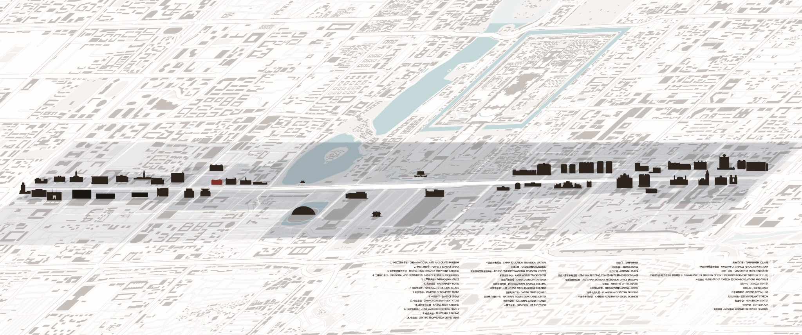
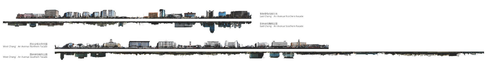
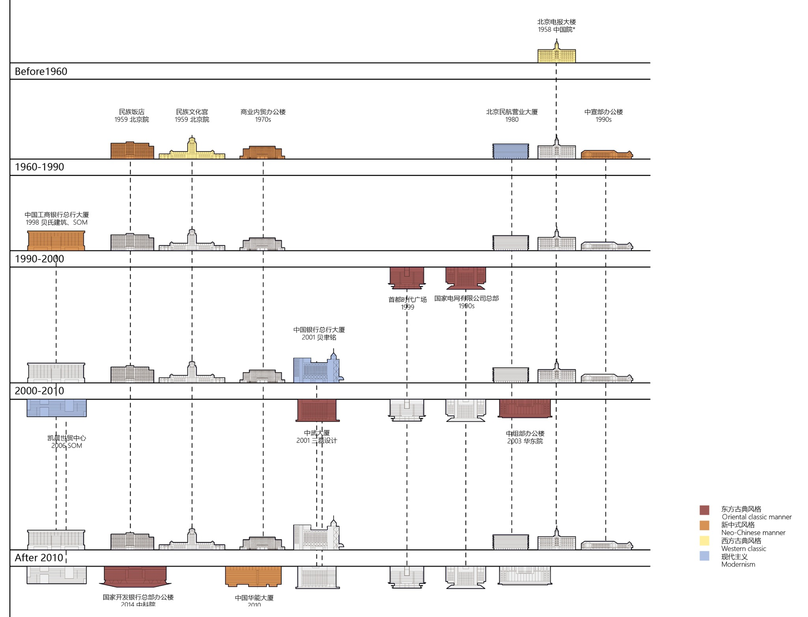
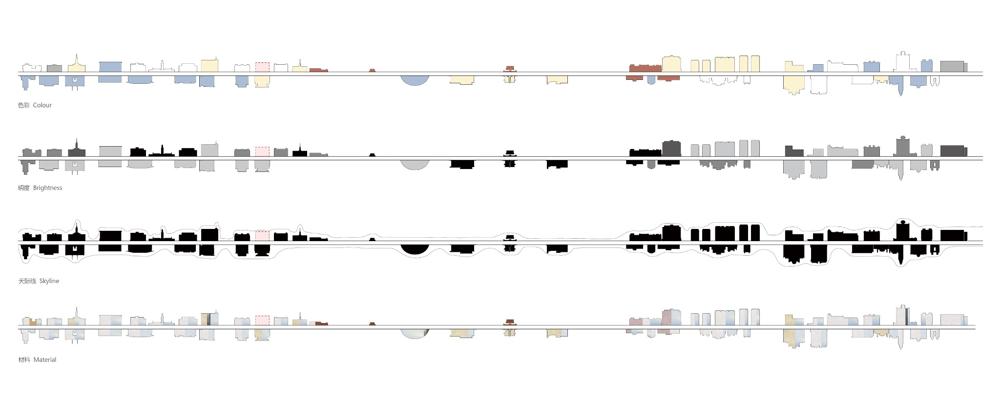
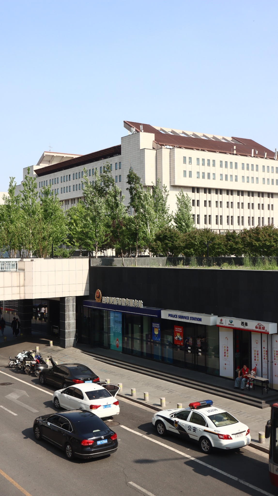
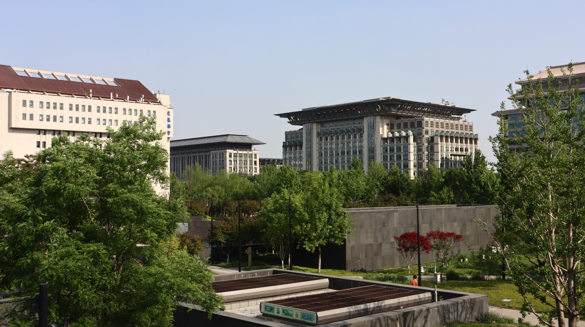

The Civic Facade
Reading Chang'an Avenue as an Urban Archive
A monumental street may present a unified image of the city while concealing the different histories, institutions and everyday conditions from which it is assembled.
Chang'an Avenue occupies a distinctive position in Beijing's urban imagination. Its east–west alignment, prominent public institutions and monumental frontages create the impression of a continuous civic landscape. Yet this apparent coherence is assembled from successive periods of construction, changing architectural languages and distinct relationships to the street.
Through urban morphological mapping, continuous elevation documentation, architectural chronology, facade classification and photographic observation, this research reads the avenue as a layered urban archive. Rather than treating individual buildings as isolated objects, it examines how they collectively form a metropolitan image, and how that image relates to conditions encountered at ground level. [C1]
Research question
How have successive generations of architecture shaped Chang'an Avenue's monumental identity, and what does its urban form reveal about the relationship between institutional representation and everyday public life?
An Avenue Across Multiple Cities
Chang'an Avenue is both an east–west metropolitan corridor and a sequence of markedly different urban conditions. Broad road space, large institutional plots and prominent buildings coexist with finer-grained local streets, neighbourhood blocks, transit infrastructure and commercial districts.
The urban mapping makes visible the difference between the avenue's apparent linear continuity and the more complex city on either side. The boulevard cannot be understood through its frontage alone: its character also comes from the varying scales, street connections and open spaces that meet the corridor.


The Street as a Continuous Facade
Continuous street elevations provide a common visual frame for comparing buildings that differ in construction period, institutional function, scale and architectural expression. Read at the scale of the avenue, individual landmarks become part of a larger sequence of repeated masses, intervals and interruptions.
The northern and southern frontages of East and West Chang'an Avenue reveal a skyline shaped by both monumental buildings and the spaces between them. What appears unified from a distance is, on closer inspection, a heterogeneous accumulation of roof profiles, heights and setbacks.


Built in Episodes, Read as One
The architectural landscape of Chang'an Avenue did not emerge in a single period. Its present appearance reflects successive moments of construction, when changing institutional needs, technologies and architectural vocabularies introduced new buildings among earlier ones. Historical studies of the avenue connect these episodes to wider transformations of the capital. [C1] [C2]
The chronological survey brings selected buildings into a shared frame, from mid-twentieth-century examples to more recent development. It uses broad stylistic readings to compare familiar monumental, traditional and modernist expressions. The categories are interpretive rather than exclusive: a building may combine features drawn from several architectural traditions.


Four Readings of One Urban Image
Four parallel visual readings isolate characteristics of the same architectural sequence. Colour records dominant facade tones; brightness distinguishes relative visual lightness and contrast; skyline abstracts building mass and roof profile; and material compares visible surface treatment.
Together, the four layers reveal how formal differences coexist with a broader perception of continuity. Repeated tones, related heights or similar surface textures may connect buildings that were constructed for very different reasons, while pronounced exceptions register as landmarks within the sequence.


Behind the Institutional Frontage
At street level, the avenue's monumental image is mediated by conditions less apparent in a continuous elevation: planted setbacks, transport routes, access to below-ground spaces, building boundaries and small public service facilities.
Photographic observations in the Xidan area document how large architectural masses are encountered through everyday street infrastructure. The frontage of an institution can be highly visible without being directly approachable. Conversely, modest facilities and secondary access points can become important parts of the city's daily spatial experience.
Road movement, entrances to lower levels and street-facing service facilities operate in the foreground of a much larger institutional building. These ordinary elements bring the scale of the individual pedestrian and vehicle into the same frame as the monumental facade.
The photograph documents the coexistence of these conditions at one moment. It does not by itself establish patterns of access, usage intensity or institutional policy.




A Monumental Image, Uneven Public Ground
Reading the maps, continuous elevations, historical diagrams and site photographs together reveals three overlapping conditions. The avenue's architectural image can be coherent at one scale and uneven at another.
Historical accumulation
The present streetscape reflects different construction periods and institutional agendas, not one coherent moment of building.
Visual continuity
Continuous elevations reveal how distinct architectural forms become perceived together through the common horizon and linear structure of the boulevard.
Everyday mediation
Roads, planting, thresholds and institutional boundaries complicate how monumental buildings are approached, seen and encountered at ground level.
The continuity visible in elevation does not necessarily correspond to continuity of access, activity or occupation. Chang'an Avenue is therefore both a constructed image of civic identity and a collection of distinct urban conditions. Current street-landscape regulations also underscore the active role of management in shaping its appearance. [C3]
The civic image of an avenue is not the same thing as the everyday public ground beneath it.
Sources & references
Published sources provide historical and institutional context. Drawings and field photographs constitute the primary visual record. Qualitative facade categories are not represented as calibrated measurements, and the images are not treated as evidence of access rights or visitor behaviour.
- C1 / Architectural history
Yu, Shuishan. Chang'an Avenue and the Modernization of Chinese Architecture.
University of Washington Press, 2012/2013. Historical construction, architectural expression and the avenue's civic symbolism.
Read publisher record ↗ - C2 / Urban history
Yu, Shuishan (2008). “Redefining the Axis of Beijing: Revolution and Nostalgia in the Planning of the PRC Capital.”
Journal of Urban History, 34(4), 571–608. Historical planning debates concerning the capital's urban axes and Chang'an Avenue.
Read article record ↗ - C3 / Municipal regulation
Beijing Municipal Government (2020). Regulations on the Environmental Landscape Management of Chang'an Avenue and Its Extensions.
Official regulatory text addressing street frontages, roads, landscape, infrastructure and public facilities. Regulation issued September 2020.
Read official document ↗